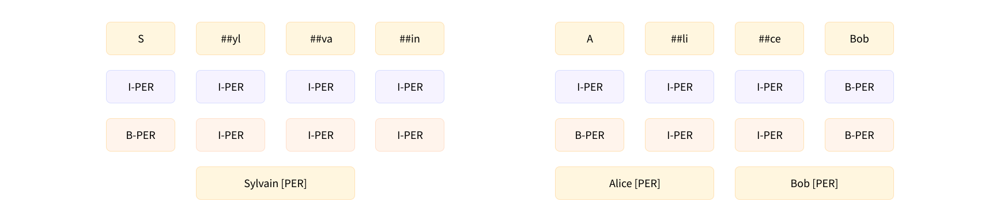
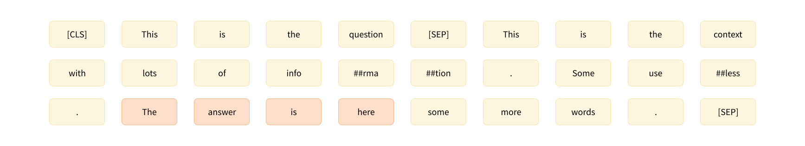

NLP课程（六-上）- Tokenizer库
转载自：https://huggingface.co/learn/nlp-course/zh-CN/
原中文文档有很多地方翻译的太敷衍了，因此才有此系列文章。
NLP课程（六-上）- Tokenizer库
根据已有的tokenizer训练新的tokenizer
1.准备语料库
⚠️ 训练标记器与训练模型不同！模型训练使用随机梯度下降使每个batch的loss小一点。它本质上是随机的（这意味着在进行两次相同的训练时，您必须设置一些随机数种子才能获得相同的结果）。训练标记器是一个统计过程，它试图确定哪些子词最适合为给定的语料库选择，用于选择它们的确切规则取决于分词算法。它是确定性的，这意味着在相同的语料库上使用相同的算法进行训练时，您总是会得到相同的结果。
Transformers 中有一个非常简单的 API，你可以用它来训练一个新的标记器，使它与现有标记器相同的特征： AutoTokenizer.train_new_from_iterator()
首要任务是在训练语料库中收集该语言的大量数据。为了提供每个人都能理解的示例，我们在这里不会使用俄语或中文之类的语言，而是使用在特定领域的英语语言：Python 代码。
🤗 Datasets库可以帮助我们组装一个 Python 源代码语料库。我们将使用**load_dataset()**功能下载和缓存CodeSearchNet数据集。该数据集是为CodeSearchNet 挑战而创建的并包含来自 GitHub 上开源库的数百万种编程语言的函数。在这里，我们将加载此数据集的 Python 部分：
1 | from datasets import load_dataset |
我们可以查看训练集的部分，以查看我们数据集中有哪些列：
1 | raw_datasets["train"] |
我们可以看到数据集将文档字符串与代码分开，并且有他们各自的标记化后的结果。
这里。 我们将只使用 whole_func_string 列来训练我们的标记器。 我们可以通过指定到 train 中的一部分来查看这些函数的一个示例：
1 | print(raw_datasets["train"][123456]["whole_func_string"]) |
应该打印以下内容：
1 | def handle_simple_responses( |
我们需要做的第一件事是将数据集转换为迭代器文本列表 - 例如，文本列表。使用文本列表将使我们的标记器运行得更快（训练成批文本而不是一个接一个地处理单个文本），如果我们想避免一次将所有内容都放在内存中，它应该是一个迭代器。如果你的语料库很大，你会想要利用这样一个特性：Datasets不会将所有内容都加载到 RAM 中，而是将数据集的元素存储在磁盘上。
创建一个包含1,000个文本的列表
执行以下操作将创建一个包含 1,000 个文本的列表的列表，但会将所有内容加载到内存中：
1 | # Don't uncomment the following line unless your dataset is small! |
使用 Python 生成器，我们可以避免 Python 将任何内容加载到内存中，直到真正需要为止。要创建这样的生成器，您只需要将括号替换为圆括号：
1 | training_corpus = ( |
这行代码不会获取数据集的任何元素；它只是创建了一个可以在 Python 中使用的对象for环形。文本只会在您需要时加载（即，当您处于for需要它们的循环），并且一次只会加载 1,000 个文本。这样，即使您正在处理庞大的数据集，也不会耗尽所有内存。
生成器对象的问题在于它只能使用一次，每次访问它将给出下一个值。 下面是一个例子：
1 | gen = (i for i in range(10)) |
我们第一次得到了这个列表，然后是一个空列表：
1 | [0, 1, 2, 3, 4, 5, 6, 7, 8, 9] |
方法1：
这就是我们定义一个返回生成器的函数的原因：
1 | def get_training_corpus(): |
方法2：
您还可以在一个 for 循环内部使用 yield 关键字定义您的生成器：
1 | def get_training_corpus(): |
这将产生与以前完全相同的生成器，但允许您使用比列表生成式中更复杂的逻辑。
2.训练一个新的Tokenizer
这一节是在已有Tokenizer的基础上，利用新的语料库训练一个新的Tokenizer，这代表Tokenizer的分割算法并没有变。
现在我们的语料库是文本批量迭代器的形式，我们准备训练一个新的标记器。为此，我们首先需要加载要与模型配对的标记器（此处为GPT-2）：
1 | from transformers import AutoTokenizer |
即使我们要训练一个新的标记器，最好还是这样做以避免完全从头开始。这样，我们就不必指定任何关于标记化算法或我们想要使用的特殊标记；我们的新标记器将与 GPT-2 完全相同，唯一会改变的是输入的数据，这将取决于我们训练的语料。
首先让我们看看这个标记器将如何处理示例的数据：
1 | example = '''def add_numbers(a, b): |
这个标记器有一些特殊的符号，比如 Ċ 和 Ġ ，分别表示空格和换行符。正如我们所看到的，这不是太有效：标记器为每个空格返回单独的标记，当它可以将缩进级别组合在一起时（因为在代码中具有四个或八个空格的集合将非常普遍）。它也有点奇怪地拆分了函数名称，而习惯使用**_**的函数命名的方法。
让我们训练一个新的标记器，看看它是否能解决这些问题。为此，我们将使用 train_new_from_iterator() 方法：
1 | tokenizer = old_tokenizer.train_new_from_iterator(training_corpus, 52000) |
如果您的语料库非常大，此命令可能需要一些时间，但对于这个 1.6 GB 文本数据集，它的速度非常快（在具有 12 个内核的 AMD Ryzen 9 3900X CPU 上为 1 分 16 秒）。
注意**AutoTokenizer.train_new_from_iterator()**仅当您使用的标记器是“快速（fast）”标记器时才有效。正如您将在下一节中看到的，🤗 Transformers 库包含两种类型的标记器：一些完全用 Python 编写，而另一些（快速的）由 🤗 Tokenizers 库支持，该库用Rust编程语言编写。 Python 是最常用于数据科学和深度学习应用程序的语言，但是当需要并行化以提高速度时，必须用另一种语言编写。例如，模型计算核心的矩阵乘法是用 CUDA 编写的，CUDA 是一个针对 GPU 的优化 C 库。
用纯 Python 训练一个全新的标记器会非常缓慢，这就是我们开发 🤗 Tokenizers库的原因。请注意，正如您无需学习 CUDA 语言即可在 GPU 上执行您的模型一样，您也无需学习 Rust 即可使用快速标记器。 🤗 Tokenizers 库为许多内部调用 Rust 代码的方法提供 Python 绑定；例如，并行化新标记器的训练，或者，正如我们在第三章中看到的，对一批输入进行标记化。
大多数 Transformer 模型都有可用的快速标记器（您可以在这里检查一些例外情况)，如果 AutoTokenizer 可用，API 总是为您选择快速标记器。在下一节中，我们将看看快速标记器具有的其他一些特殊功能，这些功能对于标记分类和问答等任务非常有用。然而，在深入研究之前，让我们在上一个示例中尝试我们全新的标记器：
1 | tokens = tokenizer.tokenize(example) |
在这里我们再次看到特殊符号Ċ和Ġ表示空格和换行符，但我们也可以看到我们的标记器学习了一些高度特定于 Python 函数语料库的标记：例如，有一个ĊĠĠĠ表示缩进的标记，以及Ġ表示开始文档字符串的三个引号的标记。标记器还正确使用**_**命名的规范将函数名称拆分为。这是一个非常紧凑的表示；相比之下，在同一个例子中使用简单的英语标记器会给我们一个更长的句子：
1 | print(len(tokens)) |
让我们再看一个例子：
1 | example = """class LinearLayer(): |
除了一个缩进对应的token，这里我们还可以看到一个双缩进的token： ĊĠĠĠĠĠĠĠ .特殊的 Python 词如 class , init , call , self ， 和 return 每个都被标记为一个标记，我们可以看到，以及分裂 _ 和 . 标记器甚至可以正确拆分驼峰式名称： LinearLayer 被标记为 [ĠLinear, Layer] .
3.保存Tokenizer
为了确保我们以后可以使用它，我们需要保存我们的新标记器。就像模型一样，是通过 save_pretrained() 方法：
1 | tokenizer.save_pretrained("code-search-net-tokenizer") |
这将创建一个名为的code-search-net-tokenizer的新文件夹，它将包含重新加载标记器所需要的所有文件。如果您想与您的同事和朋友分享这个标记器，您可以通过登录您的帐户将其上传到 Hub。如果您在notebook上工作，有一个方便的功能可以帮助您：
1 | from huggingface_hub import notebook_login |
这将显示一个小部件，您可以在其中输入您的 Hugging Face 登录凭据。如果您不是在notebook上工作，只需在终端中输入以下行：
1 | huggingface-cli login |
登录后，您可以通过执行以下命令来推送您的标记器：
1 | tokenizer.push_to_hub("code-search-net-tokenizer") |
这将在您的命名空间中创建一个名为code-search-net-tokenizer的新存储库 ，包含标记器文件。然后，您可以使用以下命令从任何地方加载标记器的 from_pretrained() 方法
1 | # Replace "huggingface-course" below with your actual namespace to use your own tokenizer |
快速标记器的特殊能力
慢速分词器是在 🤗 Transformers 库中用 Python 编写的，而快速版本是由 🤗 分词器提供的，它们是用 Rust 编写的。
⚠️ 对单个句子进行分词时，您不会总是看到相同分词器的慢速和快速版本之间的速度差异。事实上，快速版本实际上可能更慢！只有同时对大量文本进行标记时，您才能清楚地看到差异。
1.批量编码
分词器的输出不是简单的 Python 字典；我们得到的实际上是一个特殊的 BatchEncoding object。它是字典的子类（这就是为什么我们之前能够毫无问题地索引到该结果中的原因），但具有主要由快速标记器使用的附加方法。
除了它们的并行化能力之外，快速标记器的关键功能是它们始终跟踪最终标记来自的原始文本范围——我们称之为偏移映射.
我们看一个例子：
1 | from transformers import AutoTokenizer |
如前所述，我们得到一个 BatchEncoding 标记器输出中的对象：
1 | <class 'transformers.tokenization_utils_base.BatchEncoding'> |
由于 AutoTokenizer 类默认选择快速标记器，我们可以使用附加方法 this BatchEncoding 对象提供。
检查我们的分词器是快的还是慢的。
**方法一：**我们可以检查 is_fast 的属性 tokenizer ：
1 | tokenizer.is_fast |
**方法二：**检查我们的相同属性 encoding ：
1 | encoding.is_fast |
快速标记器使我们能够做什么
1.首先，我们可以访问令牌而无需将 ID 转换回令牌：
1 | encoding.tokens() |
在这种情况下，索引 5 处的令牌是 ##yl ，它是原始句子中“Sylvain”一词的一部分。
2.我们也可以使用 word_ids() 获取每个标记来自的单词索引的方法：
1 | encoding.word_ids() |
我们可以看到分词器的特殊标记 [CLS] 和 [SEP] 被映射到 None ，然后每个标记都映射到它起源的单词。这对于确定一个标记是否在单词的开头或两个标记是否在同一个单词中特别有用。我们可以依靠 ## 前缀，但它仅适用于类似 BERT 的分词器；这种方法适用于任何类型的标记器，只要它是快速的。
一个词是什么的概念很复杂。例如，“I’ll”（“I will”的缩写）算一两个词吗？它实际上取决于分词器和它应用的预分词操作。一些标记器只是在空格上拆分，因此他们会将其视为一个词。其他人在空格顶部使用标点符号，因此将其视为两个词。
同样，有一个 sentence_ids() 我们可以用来将标记映射到它来自的句子的方法（尽管在这种情况下， token_type_ids 分词器返回的信息可以为我们提供相同的信息）。
3.最后，我们可以将任何单词或标记映射到原始文本中的字符。
反之亦然，通过 word_to_chars() 或者 token_to_chars() 和 char_to_word() 或者 char_to_token() 方法。例如， word_ids() 方法告诉我们 ##yl 是索引 3 处单词的一部分，但它是句子中的哪个单词？我们可以这样发现：
1 | start, end = encoding.word_to_chars(3) |
正如我们之前提到的，这一切都是由快速分词器跟踪每个标记来自偏移量列表的文本范围这一事实提供的。为了说明它们的用途，接下来我们将向您展示如何手动复制token-classification管道的结果。
2.token分类管道内部
通过管道获得基本结果
首先，让我们获取一个token分类管道，以便我们可以手动比较一些结果。默认使用的模型是dbmdz/bert-large-cased-finetuned-conll03-english;它对句子执行 NER：
1 | from transformers import pipeline |
该模型正确地将“Sylvain”生成的每个标记识别为一个人，将“Hugging Face”生成的每个标记识别为一个组织，将“Brooklyn”生成的标记识别为一个位置。
将对应于同一实体的token组合在一起
我们还可以要求管道将对应于同一实体的token组合在一起：
1 | from transformers import pipeline |
选择的aggregation_strategy将更改为每个分组实体计算的分数。对于"simple"分数只是给定实体中每个标记的分数的平均值：例如，“Sylvain”的分数是我们在前面的示例中看到的标记S 、 ##yl分数的平均值、 ##va和##in 。其他可用的策略有：
"first", 其中每个实体的分数是该实体的第一个标记的分数（因此对于“Sylvain”，它将是 0.993828，标记的分数)"max",其中每个实体的分数是该实体中标记的最大分数（因此对于“Hugging Face”，它将是 0.98879766，即“Face”的分数）"average", 其中每个实体的分数是组成该实体的单词分数的平均值，其中每个实体的分数是组成该实体的单词分数的平均值（因此对于“Sylvain”，与"simple"策略没有区别，但“Hugging Face”的分数为0.9819，“拥抱”得分的平均值，0.975，“脸”得分的平均值，0.98879）
现在让我们看看如何在不使用pipeline（）函数的情况下获得这些结果！
从输入到预测
首先，我们需要标记我们的输入并将其传递给模型。这是完全按照Chapter 2;我们使用 AutoXxx 类，然后在我们的示例中使用它们：
1 | from transformers import AutoTokenizer, AutoModelForTokenClassification |
由于我们正在使用 AutoModelForTokenClassification 在这里，我们为输入序列中的每个标记获得一组 logits：
1 | print(inputs["input_ids"].shape) |
我们有一个包含 19 个标记的 1 个序列的批次，模型有 9 个不同的标签，因此模型的输出具有 1 x 19 x 9 的形状。与文本分类管道一样，我们使用 softmax 函数来转换这些 logits到概率，我们采用 argmax 来获得预测（请注意，我们可以在 logits 上采用 argmax，因为 softmax 不会改变顺序）：
1 | import torch |
model.config.id2label 属性包含索引到标签的映射，我们可以用它来理解预测：
2
3
4
5
6
7
8
9
10
{0: 'O',
1: 'B-MISC',
2: 'I-MISC',
3: 'B-PER',
4: 'I-PER',
5: 'B-ORG',
6: 'I-ORG',
7: 'B-LOC',
8: 'I-LOC'}
正如我们之前看到的，有 9 个标签： O 是不在任何命名实体中的标记的标签（它代表“外部”），然后我们为每种类型的实体（杂项、人员、组织和位置）提供两个标签。标签 B-XXX 表示令牌在实体的开头 XXX 和标签 I-XXX 表示令牌在实体内 XXX 。例如，在当前示例中，我们希望我们的模型对令牌进行分类 S 作为 B-PER （一个人实体的开始）和令牌 ##yl , ##va 和 ##in 作为 I-PER （在个人实体内）
在这种情况下，您可能认为模型是错误的，因为它给出了标签 I-PER 对所有这四个令牌，但这并不完全正确。实际上有两种格式 B- 和 I- 标签：IOB1和IOB2。IOB2 格式（下面粉红色）是我们介绍的格式，而在 IOB1 格式（蓝色）中，标签以 B- 仅用于分隔相同类型的两个相邻实体。我们使用的模型在使用该格式的数据集上进行了微调，这就是它分配标签的原因 I-PER 到 S 令牌。

有了这张地图，我们已经准备好（几乎完全）重现第一个管道的结果——我们可以获取每个未被归类为的标记的分数和标签 O ：
1 | results = [] |
这与我们之前的情况非常相似，只有一个例外：管道还为我们提供了有关 start 和 end 原始句子中的每个实体。这是我们的偏移映射将发挥作用的地方。要获得偏移量，我们只需要设置 return_offsets_mapping=True 当我们将分词器应用于我们的输入时：
1 | inputs_with_offsets = tokenizer(example, return_offsets_mapping=True) |
每个元组是对应于每个标记的文本跨度，其中 (0, 0) 保留用于特殊令牌。我们之前看到索引 5 处的令牌是 ##yl ， 其中有 (12, 14) 作为这里的抵消。如果我们在示例中抓取相应的切片：
1 | example[12:14] |
我们得到了正确的文本跨度，而没有 ## ：
1 | yl |
使用这个，我们现在可以完成之前的结果：
1 | results = [] |
这和我们从第一个管道中得到的一样！
分组实体
使用偏移量来确定每个实体的开始和结束键很方便，但该信息并不是绝对必要的。然而，当我们想要将实体组合在一起时，偏移量将为我们节省大量混乱的代码。如，如果我们想要将标记Hu 、 ##gging和Face组合在一起，我们可以制定特殊规则，规定在删除##时应附加前两个标记，并且应在Face上添加一个空格，因为它不以##开头 — 但这仅适用于这种特定类型的分词器。我们必须为 SentencePiece 或字节对编码分词器编写另一组规则（本章稍后讨论）。
有了偏移量，所有自定义代码都会消失：我们只需获取原始文本中从第一个标记开始到最后一个标记结束的范围。因此，对于标记Hu 、 ##gging和Face ，我们应该从字符 33 （ Hu的开头）开始，并在字符 45 （ Face的结尾）之前结束：
1 | example[33:45] |
为了编写在对实体进行分组时对预测进行后处理的代码，我们将把连续并标记为I-XXX的实体分组在一起，第一个实体除外，它可以标记为B-XXX或I-XXX （因此，当我们得到O （一种新类型的实体）或B-XXX （告诉我们相同类型的实体正在启动）时，我们停止对实体进行分组）：
1 | import numpy as np |
我们得到了与第二条管道相同的结果！
1 | [{'entity_group': 'PER', 'score': 0.9981694, 'word': 'Sylvain', 'start': 11, 'end': 18}, |
这些偏移量非常有用的另一个任务示例是问答。深入研究这个管道，我们将在下一节中进行，也将使我们能够了解 🤗 Transformers 库中标记器的最后一个功能：当我们将输入截断为给定长度时处理溢出的标记。
QA 管道中的快速标记器
1. 使用问答管道
正如我们在第 1 章中看到的，我们可以使用这样的question-answering管道来获取问题的答案：
1 | from transformers import pipeline |
与其他管道不同，其他管道无法截断和分割长于模型接受的最大长度的文本（因此可能会丢失文档末尾的信息），该管道可以处理非常长的上下文，并将返回回答问题，即使它在最后：
1 | long_context = """ |
2.使用模型进行问答
与任何其他管道一样，我们首先对输入进行标记，然后通过模型发送它。 question-answering管道默认使用的检查点是 distilbert-base-cased-distilled-squad （名称中的“squad”来自模型微调的数据集；我们将在第 7 章中详细讨论 SQuAD 数据集）：
1 | from transformers import AutoTokenizer, AutoModelForQuestionAnswering |
屏蔽了与我们不想预测的位置相对应的 logits
请注意，我们将问题和上下文标记为一对，首先是问题。

问答模型的工作原理与我们迄今为止看到的模型略有不同。以上图为例，模型经过训练可以预测答案开始的token索引（此处为 21）和答案结束处的标记索引（此处为 24）。这就是为什么这些模型不返回一个 logits 张量，而是返回两个：一个用于对应于答案的开始标记的 logits，另一个用于对应于答案的结束标记的 logits。由于在本例中我们只有一个包含 66 个标记的输入，因此我们得到：
1 | start_logits = outputs.start_logits |
为了将这些 logits 转换为概率，我们将应用一个 softmax 函数 - 但在此之前，我们需要确保屏蔽不属于上下文的索引。我们的输入是 [CLS] question [SEP] context [SEP] ，所以我们需要屏蔽问题的标记以及[SEP]标记。但是，我们将保留[CLS]标记，因为某些模型使用它来指示答案不在上下文中。
由于我们随后将应用 softmax，因此我们只需要将要屏蔽的 logits 替换为一个大的负数即可。在这里，我们使用-10000 ：
1 | import torch |
现在我们已经正确屏蔽了与我们不想预测的位置相对应的 logits，我们可以应用 softmax：
1 | start_probabilities = torch.nn.functional.softmax(start_logits, dim=-1)[0] |
在这个阶段，我们可以采用开始和结束概率的 argmax，但我们最终可能会得到一个大于结束索引的开始索引，因此我们需要采取更多预防措施:我们将计算每个可能的start_index和end_index的概率，其中start_index <= end_index ，然后采用概率最高的元组(start_index, end_index) 。
假设事件“答案从
start_index开始”和“答案在end_index结束”是独立的，则答案从start_index开始并在end_index结束的概率为：start_probabilities[start_index]×end_probabilities[end_index] 因此，要计算所有分数，我们只需要计算所有乘积**start_probabilities[start_index]×end_probabilities[end_index]**其中
start_index <= end_index。
首先让我们计算所有可能的产品：
1 | scores = start_probabilities[:, None] * end_probabilities[None, :] |
然后我们将start_index > end_index的值设置为0 （其他概率均为正数）来屏蔽它们。 torch.triu()函数返回作为参数传递的 2D 张量的上三角部分，因此它将为我们进行掩蔽：
1 | scores = torch.triu(scores) |
现在我们只需要获取最大值的索引即可。由于 PyTorch 将返回展平张量中的索引，因此我们需要使用向下除法//和模%运算来获取start_index和end_index ：
1 | max_index = scores.argmax().item() |
我们还没有完全完成，但至少我们已经有了答案的正确分数（您可以通过将其与上一节中的第一个结果进行比较来检查这一点）：
1 | 0.97773 |
我们有以标记表示的答案的start_index和end_index ，所以现在我们只需要转换为上下文中的字符索引。这就是偏移量非常有用的地方。我们可以像在令牌分类任务中那样获取并使用它们：
1 | inputs_with_offsets = tokenizer(question, context, return_offsets_mapping=True) |
现在我们只需格式化所有内容即可获得结果：
1 | result = { |
3.处理长上下文
以最大长度截断输入
如果我们尝试对之前用作示例的问题和长上下文进行标记，我们将获得比question-answering管道中使用的最大长度更高的标记数量（即 384）：
1 | inputs = tokenizer(question, long_context) |
因此，我们需要以最大长度截断输入。我们可以通过多种方法来做到这一点，但我们不想截断问题，而只想截断上下文。由于上下文是第二个句子，我们将使用"only_second"截断策略。那么出现的问题是问题的答案可能不在被截断的上下文中。例如，在这里，我们选择了一个问题，其答案位于上下文末尾，而当我们截断它时，答案不存在：
1 | inputs = tokenizer(question, long_context, max_length=384, truncation="only_second") |
这意味着模型将很难选择正确的答案。
单个句子截断成多块
为了解决这个问题， question-answering管道允许我们将上下文分割成更小的块，并指定最大长度。为了确保我们不会在错误的位置分割上下文以找到答案，它还包括块之间的一些重叠。
我们可以让分词器（快或慢）通过添加return_overflowing_tokens=True 来为我们做到这一点 ，我们可以用stride参数指定我们想要的重叠。这是一个使用较小句子的示例：
1 | sentence = "This sentence is not too long but we are going to split it anyway." |
正如我们所看到的，该句子已被分割成多个块，使得inputs["input_ids"]中的每个条目最多有 6 个token（我们需要添加填充以使最后一个条目与其他条目的大小相同） ）并且每个条目之间有 2 个token重叠。
让我们仔细看看标记化的结果：
1 | print(inputs.keys()) |
正如预期的那样，我们得到了输入 ID 和注意力掩码。最后一个键， overflow_to_sample_mapping ，是一个映射，它告诉我们每个结果对应于哪个句子——这里我们有 7 个结果，它们都来自我们传递给分词器的（唯一的）句子：
1 | print(inputs["overflow_to_sample_mapping"]) |
多个句子截断成多块
当我们一起标记多个句子时，这更有用。例如，这个：
1 | sentences = [ |
gets us: 让我们：
1 | [0, 0, 0, 0, 0, 0, 0, 1, 1, 1, 1] |
这意味着第一个句子像以前一样被分成 7 个块，接下来的 4 个块来自第二个句子。
综合:
现在让我们回到我们的长期背景。默认情况下question-answering管道使用的最大长度为 384，正如我们之前提到的，步长为 128，这对应于模型微调的方式 （您可以在调用时通过传递max_seq_len和stride参数来调整这些参数）管道）。因此，我们将在标记化时使用这些参数。我们还将添加填充（以具有相同长度的样本，以便我们可以构建张量）并询问偏移量：
1 | inputs = tokenizer( |
这些inputs将包含模型期望的输入 ID 和注意力掩码，以及我们刚才讨论的偏移量和overflow_to_sample_mapping 。由于这两个不是模型使用的参数，因此在将其转换为张量之前，我们会将它们从inputs中弹出（并且我们不会存储映射，因为它在这里没有用：
1 | _ = inputs.pop("overflow_to_sample_mapping") |
我们的长上下文被分成两部分，这意味着在它通过我们的模型之后，我们将有两组开始和结束逻辑：
1 | outputs = model(**inputs) |
和之前一样，我们在采用 softmax 之前首先屏蔽掉不属于上下文的 token。我们还屏蔽所有填充标记（如注意力掩码所标记的）：
1 | sequence_ids = inputs.sequence_ids() |
然后我们可以使用 softmax 将 logits 转换为概率：
1 | start_probabilities = torch.nn.functional.softmax(start_logits, dim=-1) |
下一步与我们对小上下文所做的类似，但我们对两个块中的每一个都重复它。我们为所有可能的答案范围打分，然后取得分最高的范围：
1 | candidates = [] |
torch.triu(input, diagonal=0, *,out=None) -> Tensor返回input 张量，对应对角线 (diagonal）取值的结果。 其余位置为0
参数:
- input (Tensor): 输入张量
- diagonal (int,可选的) - 要考虑的对角线
- out (Tensor, 可选的）- 输出张量
参数 diagonal 控制要考虑的对角线。如果diagonal = 0，则保留主对角线之上和之上的所有元素。其余位置的元素为0。正值不包括主对角线上方的对角线，类似地，负值包括主对角线下方的对角线。主对角线是i∈[0,min{d1,d2}−1] 的索引集{(i,i)}，其中d1,d2 是矩阵的维度。
这两个候选对应于模型能够在每个块中找到的最佳答案。该模型对第二部分中的正确答案更有信心（这是一个好兆头！）。现在我们只需将这两个标记范围映射到上下文中的字符范围（我们只需要映射第二个标记范围即可得到答案，但看看模型在第一个块中选择了什么是很有趣的）。
我们之前获取的offsets实际上是一个偏移量列表，每个文本块有一个列表：
1 | for candidate, offset in zip(candidates, offsets): |
如果我们忽略第一个结果，我们会得到与这个长上下文的管道相同的结果 - 耶！
标准化和预标记化
Transformer 模型中使用的三种最常见的子词标记化算法
- 字节对编码 [BPE]
- WordPiece
- Unigram
以下是标记化管道中步骤的高级概述：

1.Normalization
规范化步骤涉及一些常规清理，例如删除不必要的空格、小写和/或删除重音符号。如果您熟悉Unicode 规范化（例如 NFC 或 NFKC），这也是标记生成器可能应用的内容。
🤗 Transformers tokenizer有一个名为backend_tokenizer的属性，它提供对 🤗 Tokenizers 库中的底层 tokenizer 的访问：
1 | rom transformers import AutoTokenizer |
tokenizer对象的normalizer属性有一个normalize_str()方法，我们可以使用它来查看规范化是如何执行的：
1 | print(tokenizer.backend_tokenizer.normalizer.normalize_str("Héllò hôw are ü?")) |
在此示例中，由于我们选择了bert-base-uncased检查点，因此规范化应用了小写并删除了重音符号。
2.预标记化
正如我们将在下一节中看到的，分词器不能直接在原始文本上进行训练。相反，我们首先需要将文本分割成小实体，例如单词。这就是预分词步骤的用武之地。正如我们在第 2 章中看到的，基于单词的分词器可以简单地将原始文本拆分为空格和标点符号上的单词。这些单词将是标记器在训练期间可以学习的子标记的边界。
要查看快速分词器如何执行预分词化，我们可以使用tokenizer对象的pre_tokenizer属性的pre_tokenize_str()方法：
1 | tokenizer.backend_tokenizer.pre_tokenizer.pre_tokenize_str("Hello, how are you?") |
请注意分词器如何跟踪偏移量，这就是它如何为我们提供上一节中使用的偏移量映射的方式。这里，分词器忽略两个空格，只用一个空格替换它们，但偏移量会在are和you之间跳转，以解释这一点。
GPT-2分词器
由于我们使用的是 BERT 分词器，因此预分词涉及到空格和标点符号的分割。其他分词器对此步骤可以有不同的规则。例如，如果我们使用GPT-2分词器：
1 | tokenizer = AutoTokenizer.from_pretrained("gpt2") |
它也会根据空格和标点符号进行分割，但它会保留空格并用Ġ符号替换它们，这样如果我们解码标记，它就能恢复原始空格：
1 | [('Hello', (0, 5)), (',', (5, 6)), ('Ġhow', (6, 10)), ('Ġare', (10, 14)), ('Ġ', (14, 15)), ('Ġyou', (15, 19)), |
另请注意，与 BERT 分词器不同，此分词器不会忽略双空格。
T5 分词器
最后一个例子，让我们看一下基于 SentencePiece 算法的 T5 分词器:
1 | tokenizer = AutoTokenizer.from_pretrained("t5-small") |
与 GPT-2 分词器一样，此分词器保留空格并将其替换为特定标记 ( _ )，但 T5 分词器仅按空格而不是标点符号进行分割。另请注意，它默认在句子开头（ Hello之前）添加一个空格，并忽略are和you之间的双空格。
现在我们已经了解了一些不同的分词器如何处理文本，我们可以开始探索底层算法本身。我们首先快速浏览一下广泛适用的 SentencePiece；然后，在接下来的三个部分中，我们将研究用于子词标记化的三种主要算法是如何工作的。
3.SentencePiece
SentencePiece是一种用于文本预处理的标记化算法，您可以将其与我们将在接下来的三节中看到的任何模型一起使用。它将文本视为 Unicode 字符序列，并用特殊字符▁替换空格与 Unigram 算法结合使用（参见第 7 节），它甚至不需要预标记化步骤，这对于不使用空格字符的语言（如中文或日语）非常有用。
SentencePiece的另一个主要功能是可逆标记化：由于没有对空格进行特殊处理，因此只需将它们连接起来并用空格替换_即可对标记进行解码 - 这会产生标准化文本。正如我们之前看到的，BERT 分词器删除了重复空格，因此其分词是不可逆的。
4.算法综述
在以下部分中，我们将深入研究三种主要的子词标记化算法：BPE（由 GPT-2 等使用）、WordPiece（例如由 BERT 使用）和 Unigram（由 T5 等使用）。在开始之前，我们先简要概述一下它们各自的工作原理。如果您还没有理解此表，请在阅读完接下来的各节后立即返回此表
| Model | BPE | WordPiece | Unigram |
|---|---|---|---|
| Training | Starts from a small vocabulary and learns rules to merge tokens | Starts from a small vocabulary and learns rules to merge tokens | Starts from a large vocabulary and learns rules to remove tokens |
| Training step | Merges the tokens corresponding to the most common pair | Merges the tokens corresponding to the pair with the best score based on the frequency of the pair, privileging pairs where each individual token is less frequent | Removes all the tokens in the vocabulary that will minimize the loss computed on the whole corpus |
| Learns | Merge rules and a vocabulary | Just a vocabulary | A vocabulary with a score for each token |
| Encoding | Splits a word into characters and applies the merges learned during training | Finds the longest subword starting from the beginning that is in the vocabulary, then does the same for the rest of the word | Finds the most likely split into tokens, using the scores learned during training |